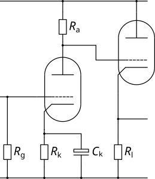

| Circuit Parameter | Operating Point | ||
|---|---|---|---|
| Field 1 | Value 1 | ||
| Field 2 | Value 2 | ||
| Field 3 | Value 3 | ||
| Field 4 | Value 4 | ||
| Field 5 | Value 5 | ||
| Field 6 | Value 6 | ||
| Field 7 | Value 7 | ||
| Field 8 | Value 8 | ||
For guitarists, the DC Cathode Follower is a very specific beast that is designed to introduce distortion (it is worth consulting the Valve Wizard for a complete explanation). When biased correctly, the stage introduces soft clipping to just one half of the signal swing. This leads to a distortion that contains mainly even harmonics - which are harmonically related (in musical terms) to the fundamental and so sound more musical than harsh odd harmonics.
The key to making this stage work is to set the follower load such that the follower is biased very hot - this actually causes the grid of the follower to start stealing current from the anode of the amplifier with higher signal levels. This is hard to achieve with devices designed to deliver plenty of anode current (e.g. the 12AU7) but works well with tubes that are less well suited to operation as a follower, and the "classic" circuit always uses a 12AX7 (although I have used this circuit effectively with a 6SL7).
This circuit tends to set the cathode voltage of the follower (i.e., the anode voltage of the amplifier) quite high, so care needs to be taken with regard to heater cathode voltage limits and heater elevation is likely to be needed to stay within safe limits. Also note the Valve Wizard's advice regarding additional components to protect the follower during start up, and the effect of using a grid stopper.